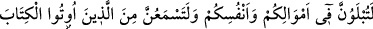
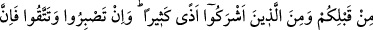
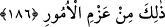

aydınlatacak bir nur verdiğimiz kişinin durumu, karanlıklarda kalıp çıkamayan
kimsenin durumu gibi midir?” (el-En’âm, 6/122) Bu âyetteki nur verme durumundan
maksat: Allah’ın nûru ile bâki olmaktır.
İşte “her nefis ölümü tadacaktır” âyet-i kerîmesinde her nefsin, fenâ fillâha istidâdı
olduğuna işâret edilmektedir. O halde mutlaka nefsin ölmesi gerekmektedir. Kimin
nefsinin ölümü normal ölüm sebeplerine bağlı olursa, hayatı da normal sebeplere bağlı
olur. Kim de Allah’da fenâ bularak nefsini öldürürse, Allah’la bekâ bulur.
Takvânızın ve günahlarınızın miktarınca “yaptıklarınızın karşılığı tastamam
verilecektir. Kim cehennemden”; yani ayrılık ateşinden “uzaklaştırılıp” hakiki
“cennete konulursa kurtuluşa ermiştir,” büyük bir başarı kazanmıştır. “Bu dünya
hayatı” ve bu hayatın nîmetleri, ancak gurura kapılıp tuzağa düşenlerin aldandığı bir
“aldanma metâından başka bir şey değildir.”
186. Andolsun ki, mallarınız ve canlarınız konusunda imtihana çekileceksiniz;
sizden önce kendilerine kitap verilenlerden ve müşriklerden birçok üzücü sözler
işiteceksiniz. Eğer sabreder ve takvâ gösterirseniz, muhakkak ki bu, (yapılacak)
işlerin en değerlisidir.
Şüphesiz meydana gelen ve yok olmalarına sebebiyet veren çeşitli âfetlerle
“mallarınız” ve öldürülme, esâret, yaralanma, türlü türlü sıkıntı, korku, zorluk, vb. gibi
başınıza gelenler sebebiyle de “canlarınız husûsunda deneneceksiniz.” Âyetteki
deneme diye ifade ettiğimiz ibtilâ, aslında “imtihan etme” mânasındadır. Yani, ibtilâ,
denenen kişinin başına bir şey getirmek, ya da onu bir şeyden ayırmak sûretiyle
genellikle de meşakkat verici bir şey dokundurarak bu kişinin ne hale gireceğini görmek
istemektir. Bu ise, ancak işlerin sonucuna hiçbir şekilde vâkıf olmayan biri için
düşünülebilir. Her şeyi en ince ayrıntısına kadar bilen ve her şeyden haberdar olan
Allah açısından ise, kula, iki veya daha fazla seçenek arasında seçim imkânı
vermesinden mecâzdır.
Bu cümle mahzûf bir kasemin cevabıdır: Vallahi, hakta sâbit kalışınız ve güzel
amelleriniz ortaya çıksın diye denenen birinin tâbi tutulduğu muameleye siz de tâbi
tutulacaksınız, demektir.
Size Kur’ân verilmezden “önce kendilerine kitap verilenlerden,” yani hıristiyan ve
yahûdîlerden ve Ebû Cehil, Ebû Süfyân, Velîd b. Muğîre gibi ortak koşan Araplardan;
bu dosdoğru dine sataşmalar; şer’i şerîfin ahkâmını noksan bulup ayıplamalar; îman